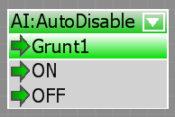

Overview
You can save CPU time by not updating distant AIs. This can be controlled on per-AI basis and globally. This feature is called "auto-disable".
Per-AI Auto-disable
Per-AI auto-disable is controlled by the entity property "AutoDisable". Please refer to AI Entities or Vehicle Entities for more details.
You can also change this property (and behavior) at run time:
Auto-disable in C++
pAIActorProxy->UpdateMeAlways(true);Auto-disable in Lua
AI.AutoDisable(entity.id, 1);Auto-disable in Flow Graph

Global Auto-disable
To control auto-disable of all vehicles, please use the console variable v_autoDisable.
To control auto-disable of all AIs, please use the console variable ai_UpdateAllAlways.